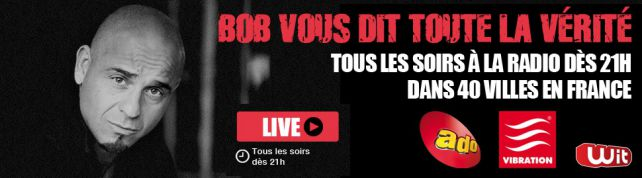
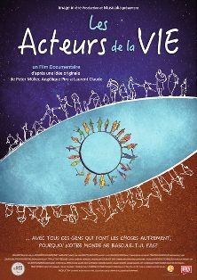

Presse
Presse
LA PRESSE EN PARLE
Interview radio de Christine Cal sur Ado FM dans l'émission "Bob Vous Dit Toute la Vérité" - le 28 août 2013

Christine répond aux questions de Bob sur la médiumnité, les différentes dimensions de l'au delà et la réalité des mondes parallèles. Elle témoignage de ses expériences avec des entités croisées lors de ces nombreux voyages astraux et met en garde contre le spiritisme et "la spiritualité New Age".Ecoutez l'émission (durée : 52 minutes)
[audio mp3="../assets/images/wp/coach-christkal5d/2014/09/mp3_789_Toute_La_Verite_Christine_Cal_Interpreter_sa_Mediumnite_281_29.mp3"][/audio]ARTICLE DANS LE JOURNAL SUD-OUEST
Ils ont changé de vie : cette comptable qui est devenue coach de vie !
Lire l’article dans le journal Sud Ouest du 2 Juin 2017 « Cette comptable qui est devenue coach de vie… »
Coup de foudre dans le Périgord : "Des gens dans des univers différents qui agissent, qui font des choses biens". Peter.
LES ACTEURS DE LA VIE - Un film de Peter Muller - Angélique Piro - Laurent Claude Je vous recommande de voir ce film documentaire, formidable base de réflexion intérieure dans notre monde actuellement désemparé qui a soif d'autre chose. Il porte témoignage d'un potentiel de changement pour ceux qui ont osé changer de vie. Les divers intervenants, dont je fais humblement partie, apportent leur vision du monde, invitent à dépasser ses propres préjugés et peurs afin de devenir acteur de sa propre vie. > Consulter leur compte Facebook